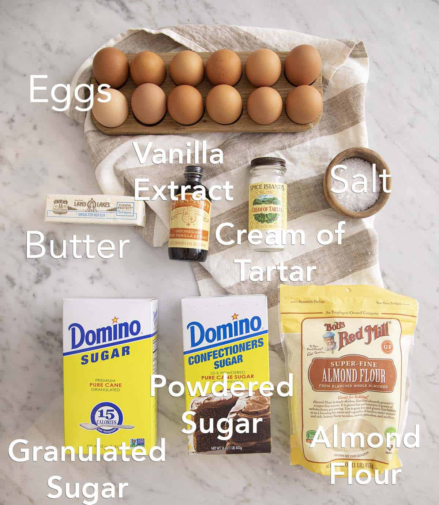
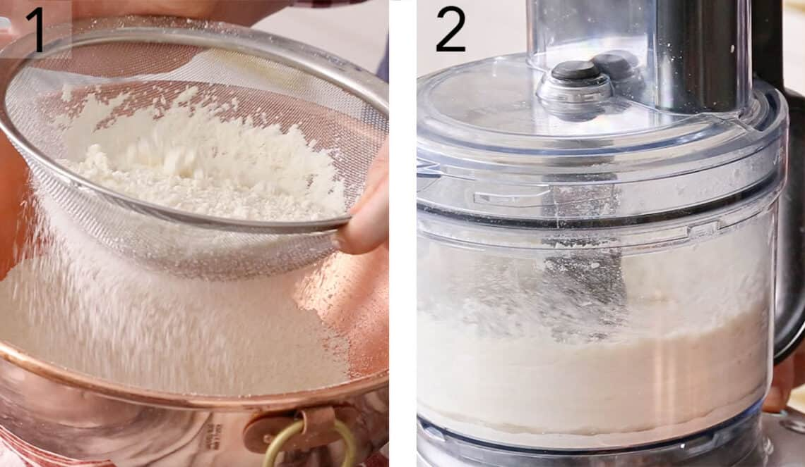
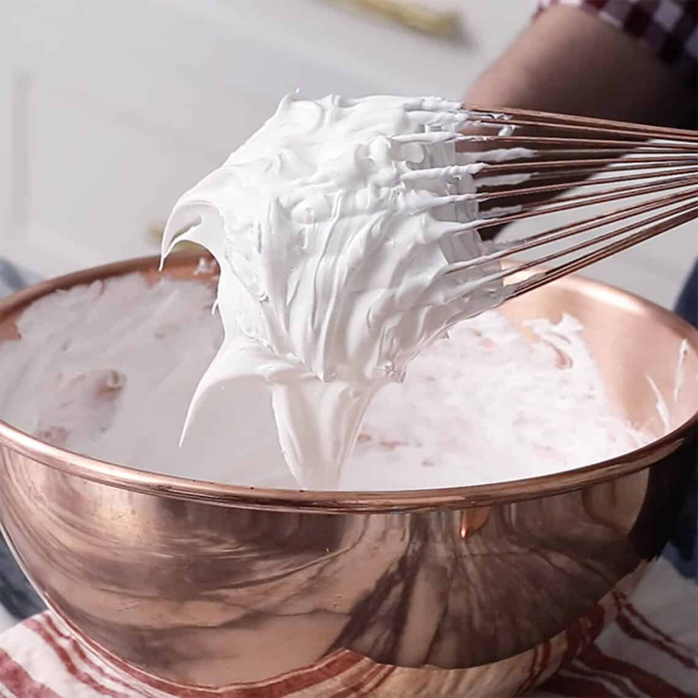
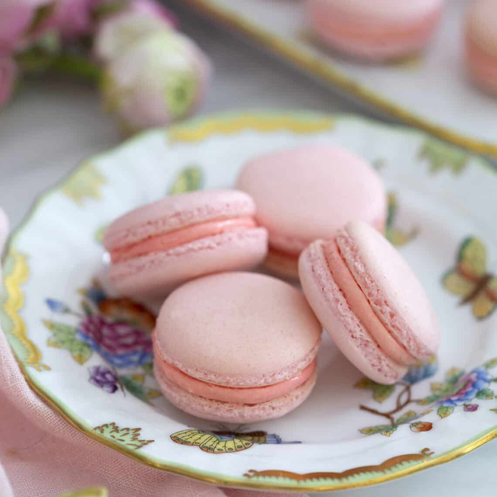

WHAT YOU’LL NEED TO MAKE THESE
Egg Whites- Make sure the weigh them using a kitchen scale. Aging egg whites for macarons is an important step. Separate the eggs, place the whites in a clean glass, cover with plastic wrap with a few holes poked in and let them hang out in the fridge for a few days before using. This will dehydrate them and make them perfect for macarons. This step isn’t a must do but a bunch of little things can add up to a big difference when making these cookies.
Almond Flour-Almost all brands will say “super-fine” but you will still need to sieve and process them to be even finer, so don’t stress out at the market it will all work out.
HOW TO MAKE MACARONS
Sievethe icing sugar and the ground almonds together in a large bowl and whisk together.
Whiz the dry ingredients in the food processor and then sieve again. Repeat this process two more times. Seems like a lot but this is how you get a nice smooth top.
Whip the egg whites with the cream or tartar. Add salt and gradually add the sugar. Mix until the merengue reaches the soft peak stage. Add vanilla and any gel food coloring in at this point.
The meringue needs to be whipped to STIFF peaks so it’s actually best to finish the whisking off by hand. This way you’ll have a better feel for then the meringue is done.
Add a third of the confectioner’s sugar and almond mixture and fold in gently. Move the spatula in circular motions bringing material from underneath to the top. Add the remaining dry mixture and continue folding. See the section on macaronage below for some more details.
You’ll know it’s ready when it has a “lava-like” consistency, forming a thick ribbon that slowly blends back into itself when drizzled from your spatula. A figure “8” test will tell you when the consistency is correct. The batter should drizzle off the spatula and form an eight. Stop immediately at this point.
Transfer batter to a pastry bag fitted with a round tip, I usually use a 12 tip. Pipe onto a sheet of parchment paper fixed to a cookie sheet. You can use some batter as glue to hold the sheet steady. Pipe perpendicular to the surface and try to be consistent with the sizes. You can print a guide out and have it below the parchment paper to help you pipe uniform circles. When you are finishing the piping motion stop squeezing the bag and pull up with a circular motion.
Tap the tray several times to remove air bubbles. Allow to sit for 40-60 minutes so the macaron batter forms a skin. You should be able to touch the shell and feel a dry surface. Heat oven to 300F. Bake for 12-15 minutes. You’ll know they’re done if the macaron shells don’t wobble when you move them, but if they do then you may need to give them a bit more time in the oven if they are not done. Allow them to cool for about 10 minutes on the pan then transfer to a wire rack to cool completely. Pipe your filling onto the back of half the macaron shells. Form a sandwich and your french macarons are ready to enjoy!
